2.2.5. Lab – Creating an APM Policy - LDAP¶
2.2.5.1. Task – Build a LDAP macro¶
Note
This lab makes use of APM macros to make policies easy to view and manage
The LDAP Macro will verify that the requesting user has a valid account and the appropiate group premisssion
Click the Add New Macro button
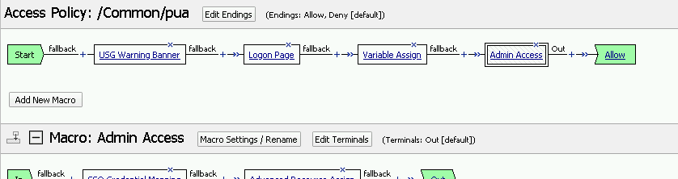
Give the macro a name and click save
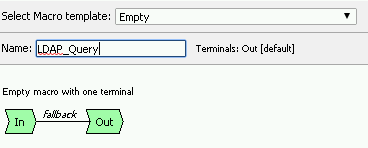
Open the newly created macro by clicking the plus sign by the name:Macro: LDAP_Query
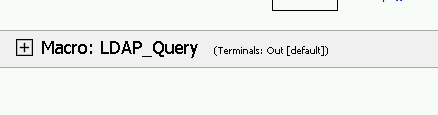
Adding the LDAP Query action by clicking the plus sign
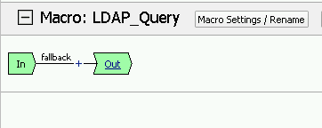
Select Authentication accross the top, select LDAP Query in the man page, and click Add Item
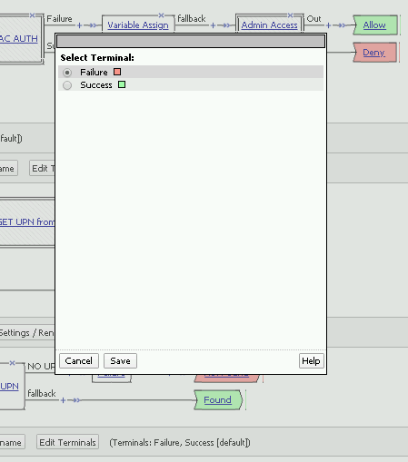
Update the Properties Tab by modifying the Server, SearchDN, SearchFilter, and Fetch Group setting
SearchDN = DC=f5lab,DC=local SearchFilter = UserPrincipalName=%{session.custom.ephemeral.upn} |image35|
Update the Branch Rules by clicking Branch Rules accross the top of the menu
Click the X button beside User Group Membership, this will delete the Branch
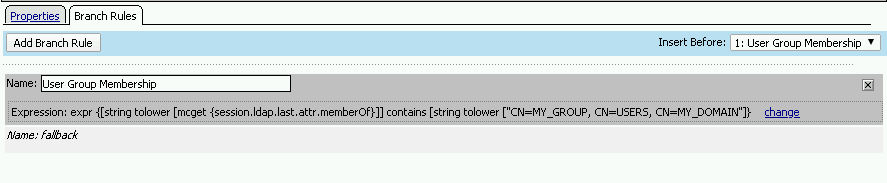
Click Add Branch Rule
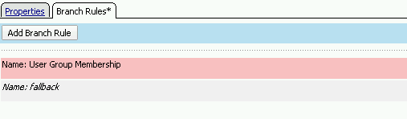
Add a name to the branch and click the change button
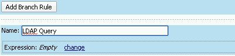
Click Add Expression
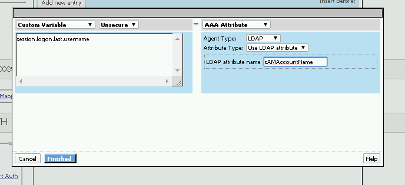
Change the setting to:
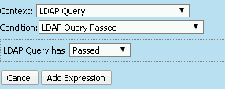
Click Add Expression
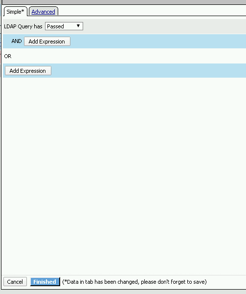
Click Finish, and then click Save
Next add Message a box, to alert when the LDAP query fails, by clicking the plus on the fallback branch between LDAP_Query and OUT terminal
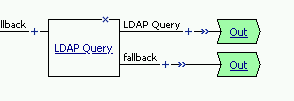
Select General Purpose tab accross the top, and select Message Box in the main section
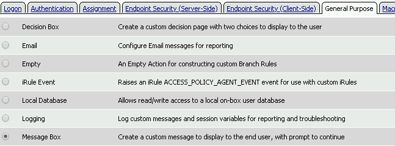
Click Add Item
Provide a Name for the message box and the Expression below to report the user who failed the LDAP Query
Name: LDAP Failure Message: LDAP Failure for user %{UserPrincipalName}
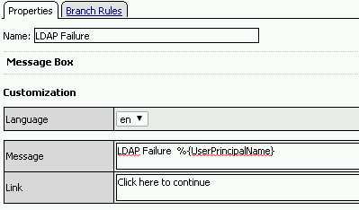
Click Save
Edit the terminal to report Success and Failure. Click Edit terminal
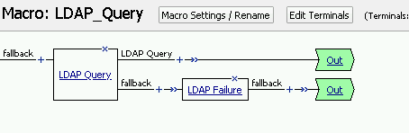
Change the Name from out to Success, and click Add terminal
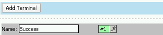
Change the name from Terminal 1 to Failure, and click save
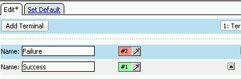
Click the terminal beside the LDAP Failure, and change the setting from Success to Failure
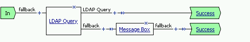
Click Save
Note
The completed LDAP Macro
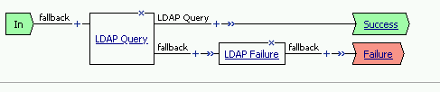